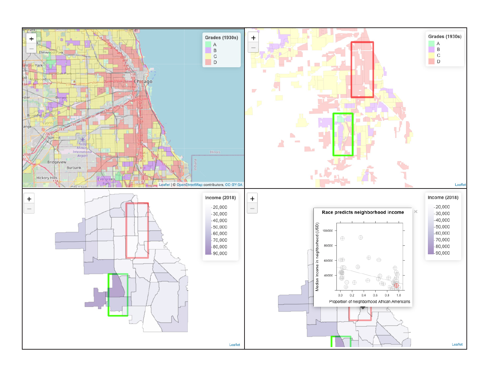

Interactive Media for Belief Change
Ongoing · 2018–Present
Priniski, J. H., & Horne, Z. (2018). Attitude change on Reddit’s Change My View. Proceedings of the Cognitive Science Society, 40, 2276–2281.
Priniski, J. H., & Horne, Z. (2019). Crowdsourcing effective educational interventions. Proceedings of the Cognitive Science Society, 41.
Priniski, J. H., & Holyoak, K. J. (2020). Crowdsourcing to analyze belief systems underlying social issues. Proceedings of the Cognitive Science Society, 42.
From Online Discussion to Interactive Learning
I am developing interactive educational materials to correct misconceptions, based on causal narratives crowdsourced directly from productive online discussions. Building on this work, I aim to create public repositories of effective arguments and interactive media that communities and educators can use to engage with contested issues.
Crowdsourcing Arguments That Change Beliefs
On Reddit’s Change My View, users discuss opposing perspectives and award a “delta” when an argument changes their view. Mining these discussions, I found that arguments built on statistical language and cited evidence were more likely to shift even strongly held beliefs (Priniski & Horne, 2018).
I then compared crowdsourced arguments with published educational interventions in controlled experiments. The crowdsourced interventions improved vaccine attitudes, reduced immigrant fears, and increased knowledge of inequities facing African Americans. Across the tested topics, they were as effective as, or more effective than, the academic interventions (Priniski & Horne, 2019).
Developing an Interactive Data Narrative
I extended one particularly effective argument into an interactive map of historical redlining and current census data in South Chicago. We used my causal language analysis pipeline to identify the argument’s central causal relationship, linking historical redlining to present-day financial inequities, and represented that relationship through the maps.

The crowdsourced argument retained its effect when developed into interactive media
We recruited 1,760 U.S. participants for a preregistered experiment. Participants were randomly assigned to the crowdsourced argument, the argument with the interactive map, an academic intervention asking them to recall examples of racial injustice, or a control task.
Attitudes were measured before and after exposure to test whether making the argument’s causal information interactive improved its effectiveness.
The crowdsourced argument and its interactive version shifted attitudes about racial inequality relative to both the academic intervention and the control. The experiment found no added benefit of the visualization compared with the argument alone.
These findings show that an argument effective in online discussion can also shift attitudes in an independent sample and retain its effect when extended into interactive educational media.
Building an Interactive Repository for Educators and Communities
With learning scientist Derek Powell and psychologist Zachary Horne, I am developing this pipeline toward a curated, searchable repository of arguments with evidence of their effectiveness. The repository will include text-based arguments and interactive extensions—visualizations and simulations that make the underlying causal narratives more engaging and comprehensible.
In controlled experiments, I will test whether interactivity itself, independent of argument content, contributes to learning complex narratives. The aim is to make these repositories viable public-facing tools that communities and educators can use to engage with contested issues in a more evidence-based way.